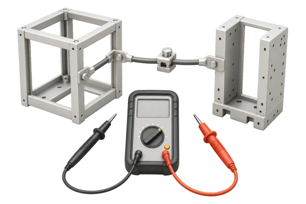

Объект и задача
Нужны схема заземления, перечень оборудования и доступ к точкам присоединения защитных проводников.
 Elecround
Elecround
Проверяем непрерывность защитных цепей между заземленными элементами, оборудованием, щитами и PE-проводниками.
Проверяем непрерывность защитных цепей между заземленными элементами, оборудованием, щитами и PE-проводниками.
Количество измерений зависит от числа щитов, корпусов оборудования, металлических конструкций и защитных соединений. Оформляем протокол проверки металлосвязи с результатами по измеренным цепям и выявленными замечаниями.
Исходные данные помогают согласовать объем, условия и ожидаемый результат до выезда специалистов.
Нужны схема заземления, перечень оборудования и доступ к точкам присоединения защитных проводников.
Количество измерений зависит от числа щитов, корпусов оборудования, металлических конструкций и защитных соединений.
Оформляем протокол проверки металлосвязи с результатами по измеренным цепям и выявленными замечаниями.
Последовательность уточняем по объекту, технической задаче и условиям безопасного доступа.
Нужны схема заземления, перечень оборудования и доступ к точкам присоединения защитных проводников.
Точки проверки должны быть доступны, а назначение проводников и оборудования желательно подтвердить по схеме или маркировке.
Количество измерений зависит от числа щитов, корпусов оборудования, металлических конструкций и защитных соединений.
Измеряем сопротивление защитных соединений и проверяем наличие надежной электрической связи между выбранными точками.
Сопоставляем полученные данные с задачей проверки и фактическим состоянием объекта.
Оформляем протокол проверки металлосвязи с результатами по измеренным цепям и выявленными замечаниями.
Подход зависит от типа объекта, состава электроустановки и режима доступа. Учитываем корпуса, шины и защитные проводники; результат — протокол проверки металлосвязи.

Выполняем проверку металлосвязи в квартирах, апартаментах и частных домах с учётом условий объекта.
Уточняем условия измерений. До выезда уточняем состав электроустановки, доступ к точкам проверки и возможность безопасных отключений.
Цена зависит от объема, количества точек проверки, состояния электроустановки, доступа и требуемых документов.
Смету согласуем по фактическому составу работ и условиям конкретного объекта.
Определяем цель проверки, объект, состав электроустановки и требуемые документы.
Фиксируем перечень измерений, точки проверки, доступ и окна отключений.
Выполняем осмотр и согласованные проверки с фиксацией результатов.
Оформляем протоколы, замечания и рекомендации по результатам работ.
Проверяем непрерывность защитных цепей между заземленными элементами, оборудованием, щитами и PE-проводниками.
Нужны схема заземления, перечень оборудования и доступ к точкам присоединения защитных проводников.
Оформляем протокол проверки металлосвязи с результатами по измеренным цепям и выявленными замечаниями.